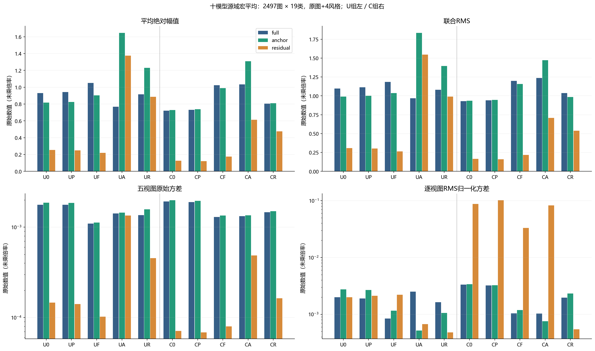
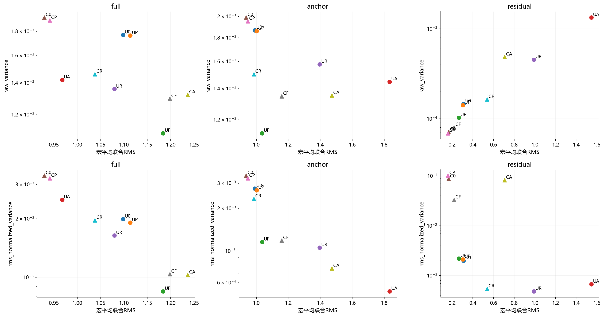
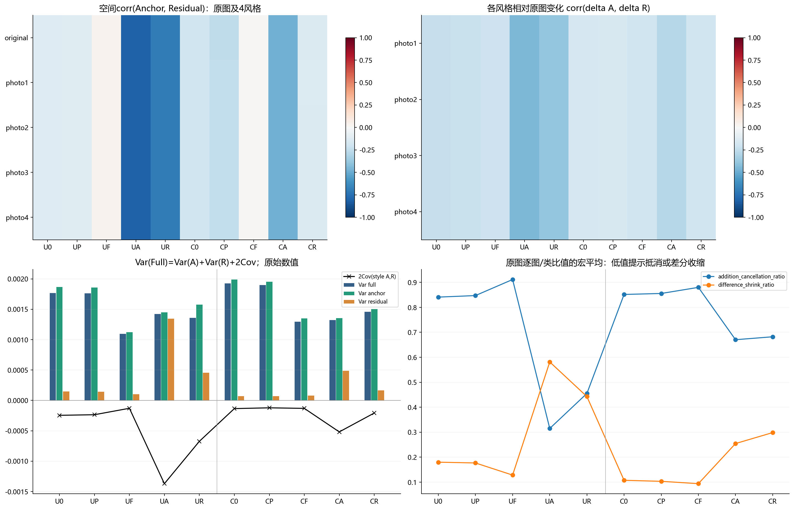
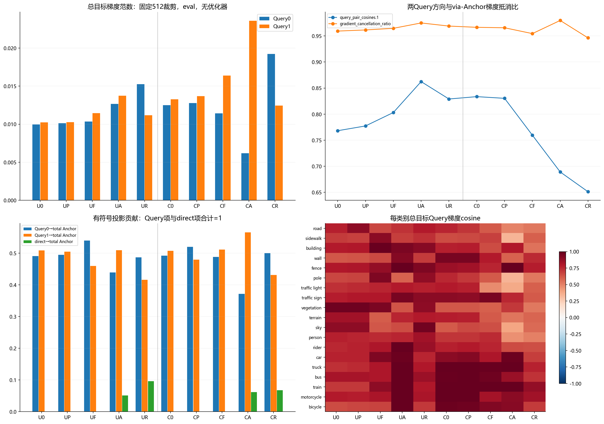
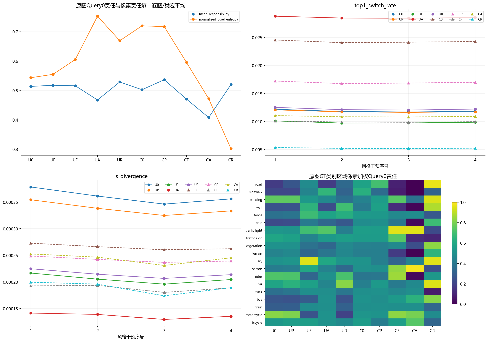
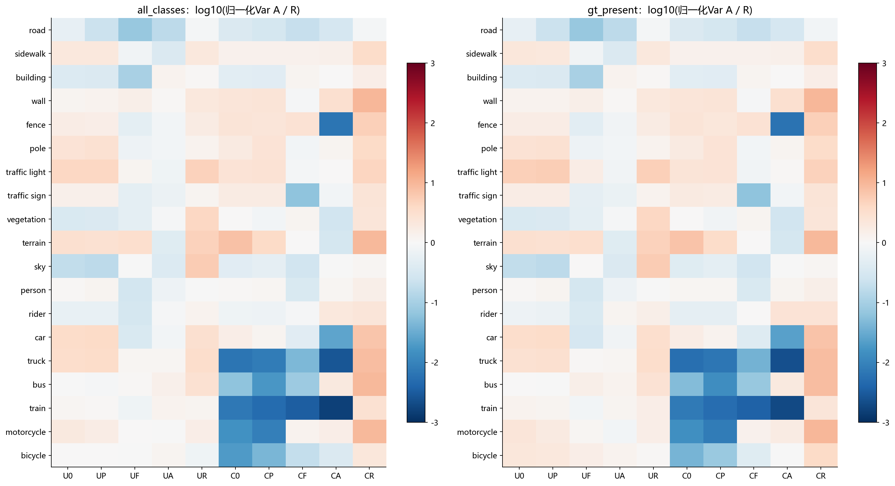

十模型最终源域诊断
2497图，五视图总体方差；原始与逐视图RMS归一化统计分开。单种子描述性结果。
01_amplitude_variance

02_amplitude_stability_scatter

03_correlation_cancellation

04_query_gradients

05_query_responsibility

06_class_stratification
